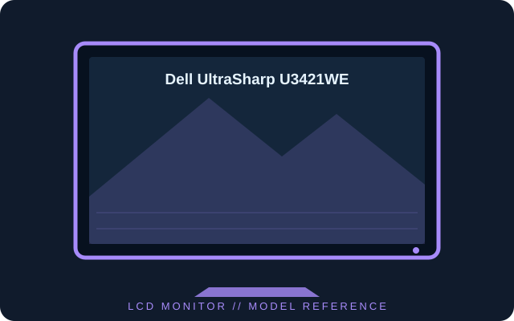

[ INDIVIDUAL COMPONENT // DISPLAYS ]
Dell UltraSharp U3421WE
34-inch curved WQHD IPS office monitor with USB-C docking, Ethernet and integrated KVM features.

IDENTIFICATION: Confirm the complete model and regional suffix on the rear label. Published figures describe the cited family/configuration; the exact manual and unit label take precedence where revisions differ.
Specifications
| Catalog subcategory | LCD displays |
|---|---|
| Exact product / family | Dell UltraSharp U3421WE |
| Panel and native resolution | 34.14-inch IPS LCD, 1900R curve, 3440 × 1440 (21:9) |
| Native timing | Up to 60 Hz at native resolution |
| Luminance / contrast | 300 cd/m² typical; 1000:1 typical |
| Inputs / companion ports | DisplayPort 1.2, HDMI 2.0 × 2, USB-C with DisplayPort Alt Mode and up to 90 W delivery, USB hub and RJ45 Ethernet |
| Stand / VESA mounting | Height, tilt and swivel adjustments; 100 × 100 mm VESA mount |
Power and compatibility notes
Typical operating draw is about 32 W. USB-C video requires a compatible DisplayPort Alt Mode host and the 90 W output is a maximum budget, not guaranteed charging for every laptop. Confirm regional power and port details in the manual.
Preservation notes
Record the complete rear-label model, serial/date code, supplied stand and accessories, tested input, host graphics output, cable, selected timing and image condition. Preserve the matching regional manual and calibration profile with the unit; use qualified service procedures for internal work.
Manufacturer documentation and sources
- Dell — U3421WE product specificationsManufacturer product page and published configuration.
- Dell — U3421WE manuals and documentationOfficial user guide, setup and regulatory documents for the exact model.